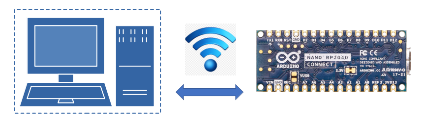

The Telemetrix-Nano-2040-WiFi and Tmx-Nano-2040-WiFi-AIO Python APIs allow you to access an Arduino Nano RP2040 Connect using Python running on your PC via Wi-Fi connectivity. Telemetrix-Nano-2040-WiFi uses threading to implement concurrency, while Tmx-Nano-2040-WiFi-AIO uses Python asyncio for its concurrency model.
All programming of The Arduino Connect is performed using either of the two Python client APIs. A fixed server sketch is loaded onto the Arduino Connect that accepts client commands and autonomously reports any detected data changes.
Summary Of Major Features:
GPIO And Sensor/Actuator Support:
- Analog Input
- Analog (PWM) Output
- Digital Input
- Digital Output
- I2C Communications Protocol
- SPI Communications Protocol
- Onboard IMU (Accelerometer and Gyroscope)
- Onboard Microphone
- Onboard RGB LED
- HC-SR04 Type Distance Sensors
- DHT Temperature/Humidity Sensors
- NeoPixels
- Servo Motors
- All Data change events are reported asynchronously via user registered callback functions and are timestamped.
- Integrated server debugging facilities are included.
Online Reference Documentation
-
Online API Reference Documentation for Telemetrix-Nano-2040-WiFi.
-
Online API Reference Documentation for Tmx-Nano-2040-WiFi-AIO.
-
A full set of working examples for Telemetrix-Nano-2040-WiFi and Tmx-Nano-2040-WiFi-AIO are available for download online.
A Quick Example For Telemetrix-Nano-2040-WiFi
import sys
import time
from tmx_nano2040_wifi import tmx_nano2040_wifi
"""
Monitor a digital input pin with pullup enabled
"""
"""
Setup a pin for digital input and monitor its changes
"""
# Callback data indices
CB_PIN_MODE = 0
CB_PIN = 1
CB_VALUE = 2
CB_TIME = 3
def the_callback(data):
"""
A callback function to report data changes.
This will print the pin number, its reported value and
the date and time when the change occurred
:param data: [pin mode, pin, current reported value, pin_mode, timestamp]
"""
date = time.strftime('%Y-%m-%d %H:%M:%S', time.localtime(data[CB_TIME]))
print(f'Report Type: {data[CB_PIN_MODE]} Pin: {data[CB_PIN]} '
f'Value: {data[CB_VALUE]} Time Stamp: {date}')
# Instantiate teh TmxNano2040WiFi class supplying the IP address of the Nano
board = tmx_nano2040_wifi.TmxNano2040Wifi(ip_address='192.168.2.246')
# Set the pin mode and register the callback
board.set_pin_mode_digital_input_pullup(11, the_callback)
try:
# kill time while waiting for data changes
while True:
time.sleep(5)
except KeyboardInterrupt:
board.shutdown()
sys.exit(0)
Sample console output as input change events occur:
Report Type: 2 Pin: 11 Value: 1 Time Stamp: 2021-09-24 16:30:19
Report Type: 2 Pin: 11 Value: 0 Time Stamp: 2021-09-24 16:30:23
A Quick Example For Tmx-Nano2040-WiFi-AIO
import asyncio
import sys
import time
from tmx_nano2040_wifi_aio import tmx_nano2040_wifi_aio
"""
Monitor a digital input pin
"""
"""
Setup a pin for digital input and monitor its changes
"""
# Setup a pin for analog input and monitor its changes
DIGITAL_PIN = 11 # arduino pin number
# Callback data indices
CB_PIN_MODE = 0
CB_PIN = 1
CB_VALUE = 2
CB_TIME = 3
async def the_callback(data):
"""
A callback function to report data changes.
This will print the pin number, its reported value and
the date and time when the change occurred
:param data: [pin_mode, pin, current reported value, timestamp]
"""
date = time.strftime('%Y-%m-%d %H:%M:%S', time.localtime(data[CB_TIME]))
print(f'Pin: {data[CB_PIN]} Value: {data[CB_VALUE]} Time Stamp: {date}')
async def digital_in(my_board, pin):
"""
This function establishes the pin as a
digital input. Any changes on this pin will
be reported through the call back function.
:param my_board: a tmx_nano2040_wifi_aio instance
:param pin: Arduino pin number
"""
# set the pin mode and register the callback
await my_board.set_pin_mode_digital_input(pin, the_callback)
while True:
try:
# kill time waiting for data change notifications
await asyncio.sleep(.001)
except KeyboardInterrupt:
await board.shutdown()
sys.exit(0)
# get the event loop
loop = asyncio.get_event_loop()
# instantiate tmx_nano2040_wifi_aio
board = tmx_nano2040_wifi_aio.TmxNano2040WifiAio(ip_address='192.168.2.246')
try:
# start the main function
loop.run_until_complete(digital_in(board, DIGITAL_PIN))
except (KeyboardInterrupt, RuntimeError) as e:
loop.run_until_complete(board.shutdown())
sys.exit(0)
Copyright (C) 2021 Alan Yorinks. All Rights Reserved.
**Last updated 27 September 2021 **